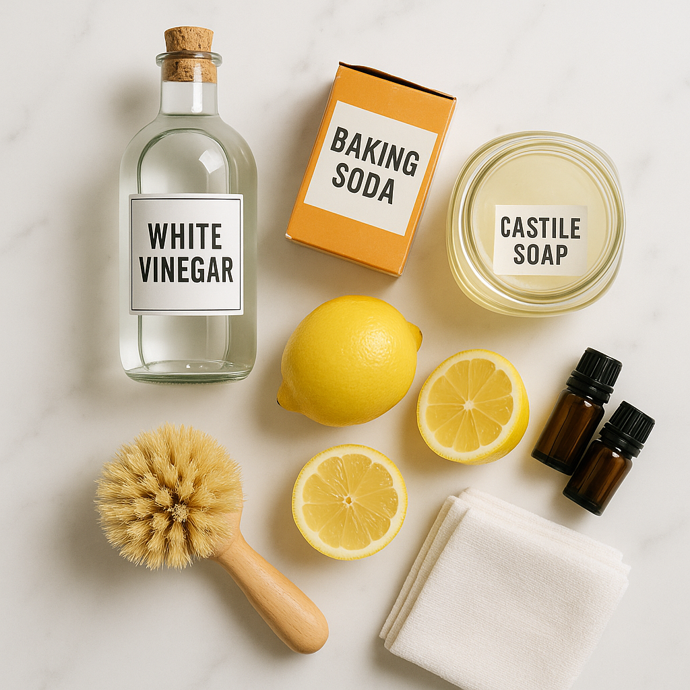

Most people would agree that I was doing everything right when it came to protecting my family.
I'd spent years researching the "safest" cleaning products. I read every label. I bought from the fancy organic stores. My cleaning cabinet looked like a Pinterest board come to life — those pretty green bottles with plants on the labels, promising they were "natural," "eco-friendly," and "safe for families."
I spent probably three times what normal cleaning products cost. But it was worth it to protect my kids, right?
Wrong.
It was a Saturday morning. My six-year-old daughter Emma was helping me clean the kitchen counters. She loved being my little helper, and I loved that I could let her help without worrying about toxic chemicals.
I had just sprayed down the counters with my favorite "all-natural" cleaner when Emma started coughing.
At first, I thought maybe she was just being dramatic — kids do that. But within seconds, the coughing turned violent. Her face went red. Her eyes watered. She clutched at her chest.
"Mommy, I can't breathe," she gasped.
We rushed to the ER. Three hours of breathing treatments later, a doctor told me something that made my blood run cold.
I felt sick. "But... but I only use eco-friendly products," I stammered. "They say 'natural' right on the bottle. They're supposed to be safe."
The doctor's expression told me everything. "Mrs. Martinez, that label doesn't mean what you think it means."
The $11 billion lie
That ER visit sent me down a research rabbit hole.
I spent weeks reading medical journals, talking to environmental health experts, and scrutinizing ingredient labels with a magnifying glass. What I discovered made me furious.
The "green" cleaning industry is worth over $11 billion in the U.S. alone. And it's built on clever marketing, not safety.
Here's what shocked me most:
The term "natural" is completely unregulated. A product can contain synthetic fragrances, harsh preservatives, and known allergens — and still call itself "natural."
"Plant-based" doesn't mean safe. Poison ivy is plant-based. So is arsenic. Many botanical ingredients can trigger severe allergic reactions and respiratory issues.
Those pleasant scents? They're often synthetic fragrances that release VOCs (Volatile Organic Compounds) — the same chemicals that sent Emma to the ER. But companies can hide them behind the word "fragrance" on the label.
I pulled out every "eco-friendly" cleaner I owned and started reading the fine print.
Every. Single. One. contained "fragrance" or "parfum."
That innocuous-sounding ingredient is actually a loophole that allows manufacturers to hide hundreds of potentially toxic chemicals.
Emma's pediatrician later told me that fragrance sensitivity affects an estimated 34% of Americans. Yet it's in almost every cleaning product marketed as "green."
Why my DIY solutions failed
After throwing out all my "natural" cleaners, I went full DIY mode.
Vinegar. Baking soda. Castile soap. Lemon juice. Essential oils. I mixed up batches every week, following recipes from Pinterest and wellness blogs.
I felt virtuous. I felt safe.
But here's what nobody tells you about DIY cleaning solutions:
That viral vinegar and baking soda combination? It's essentially just creating salt water. The acid and base neutralize each other. Any cleaning power comes from your scrubbing, not the solution.
I spent three hours trying to remove soap scum from my shower with a baking soda paste. It barely made a dent.
Vinegar's acidity etched my granite countertops, leaving dull spots that cost me $800 to fix.
And those DIY solutions? Without preservatives, they grow bacteria and mold within days. That spray bottle of diluted castile soap becomes a petri dish after a week.
The final straw came when I found mold growing on the grout in my bathroom — despite cleaning it religiously with my homemade solution every week.
In desperation, I grabbed a bottle of commercial bathroom cleaner from under my mother-in-law's sink. The mold disappeared in five minutes.
But the chemical smell was so overwhelming I opened every window and left the house for two hours. My headache lasted all day.
I felt trapped between products that worked but made us sick, and products that were safe but didn't work.
The Facebook post that changed everything
In my desperation, I joined online communities for people with chemical sensitivities.
One evening, a woman named Sarah posted about a product called Moonrise Natural Multi-Surface Cleaner.
"It's the only thing I've found that's actually fragrance-free AND works on everything," she wrote. "No essential oils. No synthetic fragrances. Just professional-strength cleaning that doesn't make me sick."
I was skeptical. I'd been burned too many times.
But her post had over 200 comments from other people with severe chemical sensitivities, asthma, and allergies — all swearing by it.
"I can finally let my children help me clean," one mother wrote.
"This is the first product in 10 years that doesn't give me a migraine," wrote another.
I did more research. Moonrise Natural wasn't like other products. It was formulated specifically for people with chemical sensitivities by a team of chemists who understood the problem.
Unlike typical "green" products that prioritize marketing over safety, Moonrise was:
Truly fragrance-free — No synthetic fragrances, no essential oils, no "masking" agents
Professional-grade formula — Actually works on grease, soap scum, mold, and tough stains
Complete ingredient transparency — Every ingredient listed and explained in plain English
Third-party certified — EPA Safer Choice approved
SAFER
CHOICE
FRAGRANCE
FREE
SAFE
TOXIC
I ordered a bottle.
The day I finally breathed easy
When the bottle arrived, the first thing I noticed was how it looked: like pale yellow water. No vibrant blue color. No thick gel. Just liquid.
I followed the dilution instructions — two tablespoons in a spray bottle filled with water — and held my breath as I sprayed it on my kitchen counter.
Nothing.
No smell. No fumes. No eye irritation. No weird chemical undertone.
I wiped the counter. It cleaned easily, leaving no streaks or residue. Just... clean.
Over the next week, I tested it everywhere. On my greasy stovetop — removed baked-on splatters without 20 minutes of scrubbing. On bathroom soap scum — dissolved the hard water buildup I'd been fighting for months. On mold — cleared the grout mildew that my DIY solutions couldn't touch. On glass — streak-free shine. On floors — left my hardwood gleaming.

But the real test came when Emma wanted to help me clean the bathroom.
I hesitated. After her hospital visit, I'd been terrified to let her near any cleaning product.
But I handed her a spray bottle and watched carefully.
She sprayed. She wiped. She giggled as she made the mirror shine.
And she breathed normally the entire time.
No coughing. No wheezing. No red eyes.
I cried.
Here's the catch
After I wrote about my experience on social media, thousands of women reached out asking where to buy it.
The response was overwhelming. So overwhelming that Moonrise Natural is currently sold out.
The company is small — not backed by a multi-billion dollar corporation. They can't produce infinite bottles.
But they're working to restock as quickly as possible while maintaining their quality standards.
They're taking waitlist sign-ups now. If you want to be notified the moment they restock, I'd recommend adding your email below.
Over 12,000 people are already on the list. Based on how fast the last batch sold out, I wouldn't wait.
Get Notified When Back in Stock
Join the waitlist for exclusive early access and special pricing when Moonrise Natural restocks.
What people are saying
I'm not the only one who's had this experience. Here's what other people with chemical sensitivities and families have shared:
Is it worth it?
I'm not a doctor. I'm not a chemist. I'm just a mom who spent way too long believing that "natural" meant "safe."
I'm a mom who watched her daughter struggle to breathe because of products I thought were protecting her.
I'm a mom who wasted years and hundreds of dollars on products that either didn't work or made us sick.
If you're in that same position — trapped between products that work but aren't safe, and products that claim to be safe but don't work — I understand your frustration.
You don't have to choose between a clean home and a healthy home.
You deserve both.
Your family deserves to breathe easy in their own home.
Don't Miss the Next Restock
The last batch sold out in 3 days. Join the waitlist to get notified first.
To check if Moonrise Natural is back in stock, click the button above to join the waitlist.